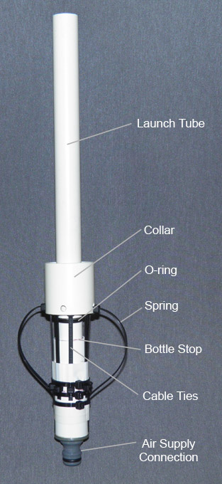

 O lançador de Clark Cable-Tie foi desenvolvido por Ian Clark em 1998, na Austŕlia e se tornou lançador mais usado em todo o mundo. Barato, fácil de construir e confiável, ele é projetado para lançar foguetes com o bocal normal da garrafa, tornando desnecessário um bocal especial para o seu foguete, como seria necessário em lançadores do tipo Gardena.
O projeto básico do lançador Clark Cable-Tie é baseado em um pedaço de tubo de PVC com um anel de abraçadeiras do tipo cinta hellerman cujas cabeças se prendem à flange da garrafa. Um colar feito de um cano de PVC maior envolve as abraçadeiras impedindo que elas se espalhem e, portanto, segurando o foguete no lançador. Quando é hora de lançar o colar é puxado para baixo, permitindo que as cabeças dos cabos se separem e soltem o foguete.
Este tutorial de construção é uma adaptação autorizada do do tutorial produzido por George Katz, do Air Command Rockets 1
Componentes do lançador
Ao construir sua própria variação do lançador, há vários componentes importantes a serem considerados:
-
O Selo: o selo entre a garrafa e o lançador é um dos componentes mais críticos. Houve inúmeras maneiras de criar um selo e aqui estão alguns dos mais comuns:
- Abaulamento do tubo de PVC: esta técnica exige que você faça uma protuberância no tubo de PVC, aquecendo-o e empurrando as duas extremidades, uma em direção a outra. Como não há borracha, será o próprio PVC que irá selar o sistema. O inconveniente é que é muito fácil de ocorrerm vazamentos porque o foguete tenderá a subir pelo tubo de lançamento e a pressão poderá escapar parcialmente.
- Fita: uma fita é enrolada em volta do tubo de lançamento até que seja larga o suficiente para formar uma vedação. Isso funcionará para emergências quando você não tiver mais nada e talvez seja bom o suficiente para vários lançamentos. A fita geralmente precisa ser substituída com frequência. Não funcionará bem com pressões mais altas. 2
- Selo plano: alguns lançadores sugerem que você pode obter uma vedação pressionando a extremidade da garrafa em uma arruela de borracha, mas isso raramente funciona bem, pois você pressuriza o foguete que a garrafa tem a tendência de subir pelo tubo de lançamento, esticando as abraçadeiras e quebrando a vedação.
- O-ring: esta é a melhor opção para vedar a garrafa. Ele permite que a garrafa se mova enquanto as braçadeiras se esticam. O anel de vedação, no entanto, requer uma ranhura de tamanho correto para se sentar.
- Bocal de balão: existem tutoriais indicando o uso de um bocal de balão de festa, mais precisamente do balão 6,5", coberto com algum tipo de fita, esparadrapo por exemplo. Ele fica no estilo do selo o-ring. Minha experiência pessoal é que esse sistema não é muito confiável nem durável, além de ser difícil a troca da fita e do bocal de borracha.
-
Colarinho: o colarinho ou o anel de gatilho mantém as abraçadeiras juntas, impedindo que o foguete seja liberado. Deslizar a gola para baixo permite que as abraçadeiras se soltem e liberem o foguete. O diâmetro interno deve ser grande o suficiente para caber no flange da garrafa e nas braçadeiras, mas pequeno o suficiente para não permitir que as braçadeiras se separem demais. Em geral, um tubo de PVC para esgoto (branco) de 40mm é o suficiente.
-
Abraçadeiras e sua retenção: as abraçadeiras3 prendem o foguete pelo flange da garrafa. Por causa das forças envolvidas, é importante que todas as cabeças dos cabos estejam alinhadas com o flange, de modo que algumas abraçadeiras não tomem mais esforço do que as outras. O número de abraçadeiras pode variar dependendo do tamanho e da carga. A retenção do empate de cabos também é muito importante porque, em última análise, o mecanismo de retenção precisa suportar toda a força que o foguete exerce. A forma mais comum é uma abraçadeira de mangueira apertada.
-
Mola: uma mola é usada às vezes para manter o colar na posição travada antes de começar a pressurizar o foguete. Uma vez que você comece a pressurizar o foguete, a força das abraçadeiras de cabo contra o colar o manterá no lugar. Normalmente, esta mola é feita a partir de uma seção de garrafa PET.
-
Tubo de lançamento: o lançador é tipicamente equipado com um tubo de lançamento cujo comprimento é determinado pelo tamanho dos foguetes que estão sendo lançados.
-
Suporte de garrafa: um suporte na parte inferior do tubo de lançamento é usada às vezes para evitar que o foguete deslize muito abaixo do próprio peso. Isso ajuda a garantir que o selo esteja na posição correta em relação ao gargalo da garrafa.
-
Conexão de suprimento de ar: o tipo de conexão que você usa no lançador dependerá do tipo de conector que você tem em sua mangueira de suprimento de ar. Normalmente, esta é uma válvula Schrader usada em pneus de bicicleta. Neste tutorial, usamos o conector rápido Gardena.
Tutorial de construção
A construção de um lançador não é uma receita de bolo, que você copia da internet, segue ela a risca e tudo fica certo. Depende do nível de habilidade que o construtor tem, dos materiais e ferramentas disponíves e das necessidades que o construtor, entre outros fatores.
Assim, optei por colocar diversos vídeos mostrando a construção de lançadores do tipo Clark Cable-Tie para servir de referência. Além deles, recomendo a consulta a página do Air Command Rockets 1 que inspirou este conteúdo.
Como fazer um lançador Clark Cable-Tie
Como fazer um selo o-ring para um Clark Cable-Tie
Mecanismo de trava/liberação do foguete no Clark Cable-Tie
Notas
-
Clark Cable-Tie Launcher, do Air Command Rockets, disponível em http://www.aircommandrockets.com/construction_9.htm ↩↩
-
Tenho testado uma variação que usa fita veda-rosca sobre anés de vedação de borracha que tem funcionado bem com pressões até 120psi. Talvez funcione com pressões maiores, mas atualmente não possuo equipamento para maiores pressões. ↩
-
Essas abraçadeiras são do tipo cinta de hellerman, também conhecidas como enforca-gato. ↩